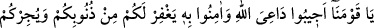
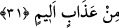

Denildi ki; bu cinlerin dinledikleri Kur’ân’ın Mûsâ’nın kitabından sonra indirilmiş
olmasına vurgu yapmaları kendilerinin yahûdîlik dini üzere olmalarındandır. Onlar
müslüman olmuşlardır.
Müftî Sa’dî Havaşî’sinde şöyle demektedir: Ben derim ki zâhir olan şudur ki bu söz
Varaka b. Nevfel’in söylediği “Bu, Allah Teâlâ’nın Mûsâ’ya indirmiş olduğu namustur”
sözünün bir benzeridir. Bu sözün izah ve yorumunda ulemâ şöyle demiştir: Varaka b.
Nevfel hristiyan olmasına rağmen Mûsâ’yı zikretmiş olması peygamberlik müessesesini
tesbit içindir. Çünkü Tevrât’ın Mûsâ (a.s.)’a indirilmiş olduğu yahûdîler ve hristiyanlar
arasında ittifakla kabul edilen bir durumdur. İsa’nın durumu ise böyle değildir. Zira
yahûdîler Îsa (a.s.)’ın peygamberliğini inkâr etmektedirler. Yahud hristiyanlar Tevrât’ın
ahkâmına tâbi olup ona mürâcaat etmektedirler. İşte bu iki durum ve yorumlar aynı
şekilde burada icrâ edilir.
İbn Abbas’tan rivâyet edildiğine göre cinler Îsâ (a.s.)’ın durumunu işitmemişler ve
onun için Mûsâ’dan sonra diye, Mûsâ’ya ve Tevrât’a atıfta bulunmuşlardır.
Müftî Sa’dî şöyle demektedir: Bu rivâyet İbn Abbas’tan sahih bir rivâyet
olmayabilir. Çünkü bu rivâyetin muhtevâsı ihtimalden pek uzaktır. Zira hristiyanlar
doğu, batı ve dünyanın dört bir bucağına yayılmış koca bir ümmettir. Cinlerin bu derece
yaygın olan bir dini ve onun mensuplarını duymamış olmaları nasıl düşünülür ki?
İnsanü’l-uyûn’da şöyle denilmiştir: Cinlerin, Mûsâ’dan sonra demeleri, Îsâ’nın
şeriatının Mûsâ’nın şeriatını neshetmeyip onu takrir edici olmasındandır.
Fakîr (Bursevî) şöyle der: Tevrât’ın ahkâm ve şer’î prensipleri şâmil olan ilk kitap
olduğu doğrudur. Tevrât’tan önceki kitaplar böyle değildir. Onlar böyle hükümlere
şâmil olmayıp yalnız Allah’a îmânı ve O’nun birliğini anlatan kitaplardır. Bundan
dolayı onlara “sahîfeler” denmiştir. Kitap denmesi ise mecâzdır. Siret-i Halebiye’de
böyle anlatılmıştır.
Kur’ân da aynı şekilde ahkâm ve şeriat prensiplerini şâmil olunca sanki ilâhi kitaplar
iki kitaba indirgenmiş oldu. Bunlar Tevrât ve Kur’ân’dır. İşte cinler Mûsâ’yı özellikle
zikretmişlerdir. Ayrıca burada her iki kitabın da şeref ve büyüklüğü beyân edilmektedir.
İbn Atâ şöyle demiştir: Kur’ân bâtında; iç âlemde hakka, zâhirde, dış görünüşte doğru
yola götürür.
31. Ey kavmimiz! Allah’ın dâvetçisine uyun. Ona îmân edin ki Allah da sizin
günahlarınızı kısmen bağışlasın ve sizi acı bir azaptan korusun.
“Ey kavmimiz, Allah’ın da‘vetçisi” olan Muhammed (s.a.)’e yahut dinlemiş
olduğunuz kitaba, Kurân’a “uyun.” Zira bu Kur’ân, hidâyet ettiği gibi, Allah’a dâvet